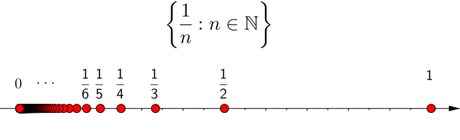
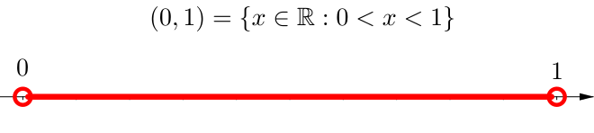
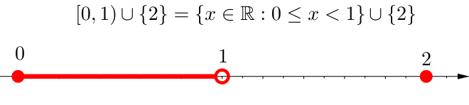
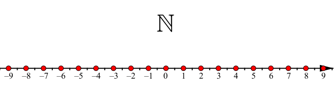
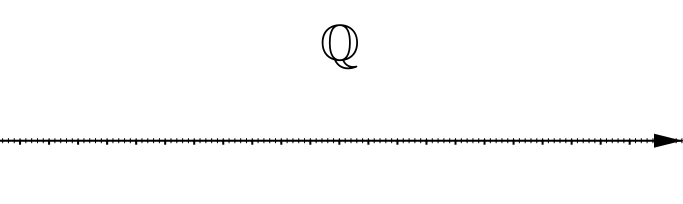
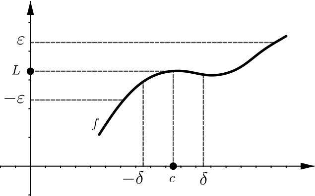

Summary Week 4
Cluster points
Definition: Let $S \subset \R$ be a set. A number $x \in \R$ is called a cluster point of $S$ if for every $\epsilon \gt 0$, the set $(x-\epsilon,x+\epsilon) \cap S \setminus \{ x \}$ is not empty.
Cluster points
$0$ is the only cluster point.
Cluster points
The cluster points are all points in the closed interval $\left[0,1\right]$.
Cluster points
The set of cluster points is the interval $\left[0,1\right]$.
Cluster points
No cluster points.
Cluster points
The set of cluster points is $\R$.
Cluster points
Theorem: Let $S \subset \R$. Then $x \in \R$ is a cluster point of $S$ if and only if there exists a convergent sequence of numbers $\{ x_n \}$ such that $x_n \not= x$ and $x_n \in S$ for all $n$, and $\lim\, x_n = x$.
Definition of limit
Definition: Let $f \colon S \to \R$ be a function and $c$ a cluster point of $S \subset \R$. Suppose there exists an $L \in \R$ and for every $\epsilon > 0$, there exists a $\delta \gt 0$ such that whenever $x \in S \setminus \{ c \}$ and $\abs{x - c} \lt \delta$, we have \begin{equation*} \abs{f(x) - L} \lt \epsilon . \end{equation*} We then say $f(x)$ converges to $L$ as $x$ goes to $c$. We say $L$ is the limit of $f(x)$ as $x$ goes to $c$. We write \begin{equation*} \lim_{x \to c} f(x) := L , \end{equation*} or \begin{equation*} f(x) \to L \quad\text{as}\quad x \to c . \end{equation*} If no such $L$ exists, then we say that the limit does not exist or that $f$ diverges at $c$.
Definition of limit
Sequencial limits
Theorem: Let $S \subset \R$, let $c$ be a cluster point of $S$, let $f \colon S \to \R$ be a function, and let $L \in \R$. Then $f(x) \to L$ as $x \to c$ if and only if for every sequence $\{ x_n \}$ of numbers such that $x_n \in S \setminus \{c\}$ for all $n$, and such that $\lim\, x_n = c$, we have that the sequence $\{ f(x_n) \}$ converges to $L$.
Sequencial limits: When a function does not have a limit?
Theorem:
Let $S \subset \R$, let $c$ be a cluster point of $S$, let $f \colon S \to
\R$ be a function, and let $L \in \R$.
Then
$f(x)$ does not have a limit at $c$ if and only if there exists a
sequence $\{ x_n \}$ in $S$ with $x_n\neq c$ for all $n\in \N$
sucht that the sequence $\{ x_n \}$ converges to $c$ but the
sequence $\{ f(x_n) \}$ does not converge in $\R$.
Algebraic properties
Theorem: Let $S \subset \R$ and let $c$ be a cluster point of $S$. Suppose $f \colon S \to \R$ and $g \colon S \to \R$ are functions such that the limits of $f(x)$ and $g(x)$ as $x$ goes to $c$ both exist. Then